0599998531
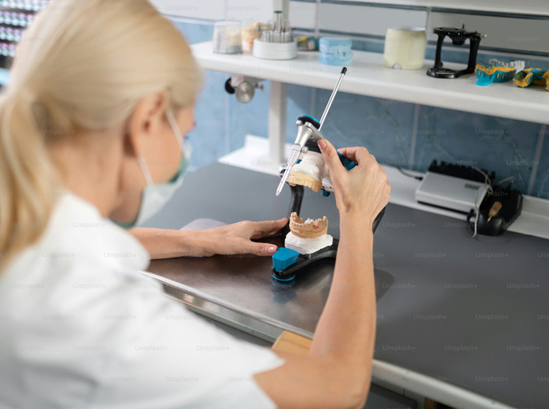
نحن نعمل على تمكين الآلاف من عيادات طب الأسنان من خلال تدفقات عمل مبتكرة لتعزيز رعاية المرضى وإحداث ثورة في طريقة فحصهم وطلبهم والتعاون في المختبر.
لا يمكن تحقيق ترميمات متسقة وملائمة الا من خلال التواصل القوي. في لازورد, قمنا بتطوير طرق مبتكرة للتعاون مع أطباء الأسنان لدينا باستخدام قوة التكنولوجيا لاعادة تعريف ما هو ممكن لكل مريض.
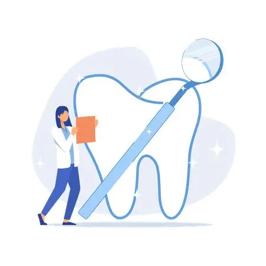
احصل علي مراجعات المسح في الوقت الفعلي واعتمد تصميمات الحالات ثلاثية الأبعاد للتحكم النهائي في عملك المختبري.
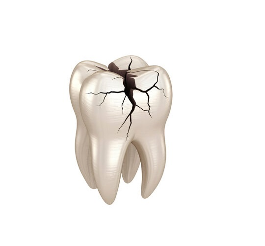
احصل علي مراجعات المسح في الوقت الفعلي واعتمد تصميمات الحالات ثلاثية الأبعاد للتحكم النهائي في عملك المختبري.
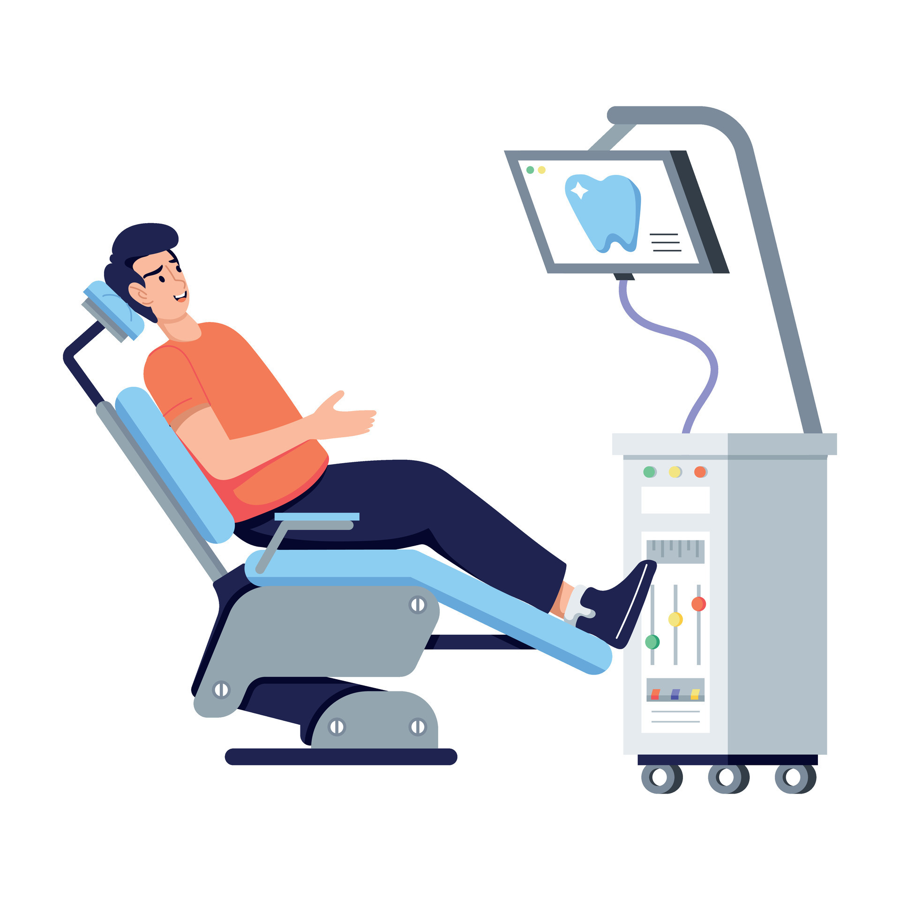
احصل علي مراجعات المسح في الوقت الفعلي واعتمد تصميمات الحالات ثلاثية الأبعاد للتحكم النهائي في عملك المختبري.
احصل علي مراجعات المسح في الوقت الفعلي واعتمد تصميمات الحالات ثلاثية الأبعاد للتحكم النهائي في عملك المختبري.
هل أنت جديد في مجال المسح الضوئي؟
تقديم نتائج متوقعة للمرضى باستخدام التكنولوجيا والأدوات المبتكرة التي تمنحك التحكم النهائي.
هل تقوم بالمسح الضوئي بالفعل؟
قم بتنمية ممارستك من خلال الانتقال إلى سير العمل الرقمي باستخدام مجموعة أدوات طب الأسنان الرقمية المثبتة لدينا.
لا يمكن تحقيق ترميمات متسقة وملائمة إلا من خلال التواصل القوي. في لازورد، قمنا بتطوير طرق مبتكرة للتعاون مع أطباء الأسنان لدينا باستخدام قوة التكنولوجيا لإعادة تعريف ما هو ممكن لكل مريض.
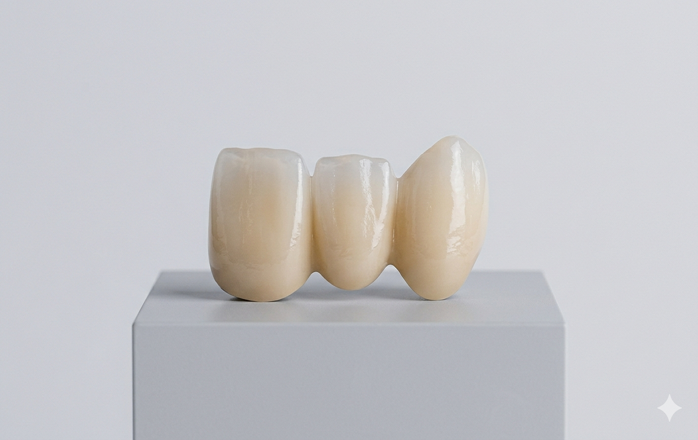
جزاء مباشرة إلى النهاية
طقم الأسنان ذو الموعد الثاني
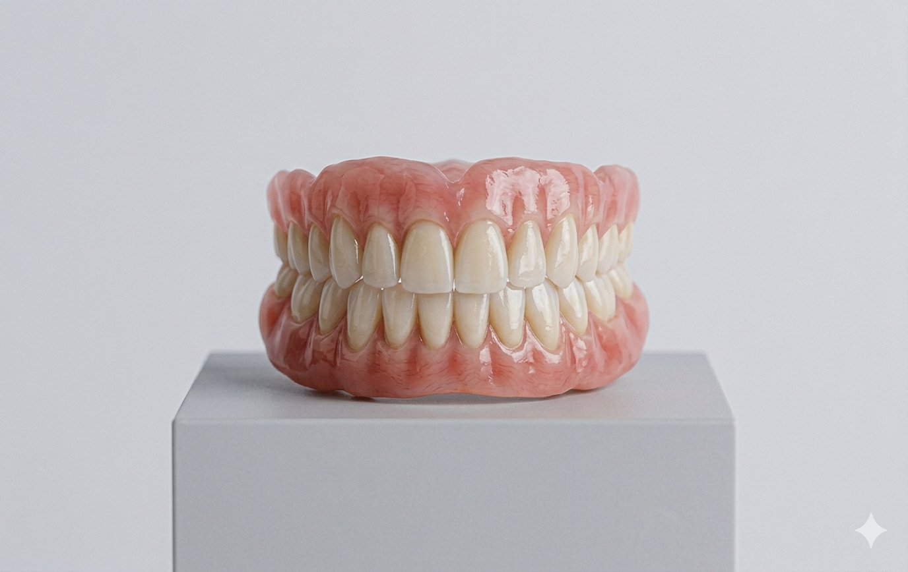
حلول زراعة الأسنان الشاملة
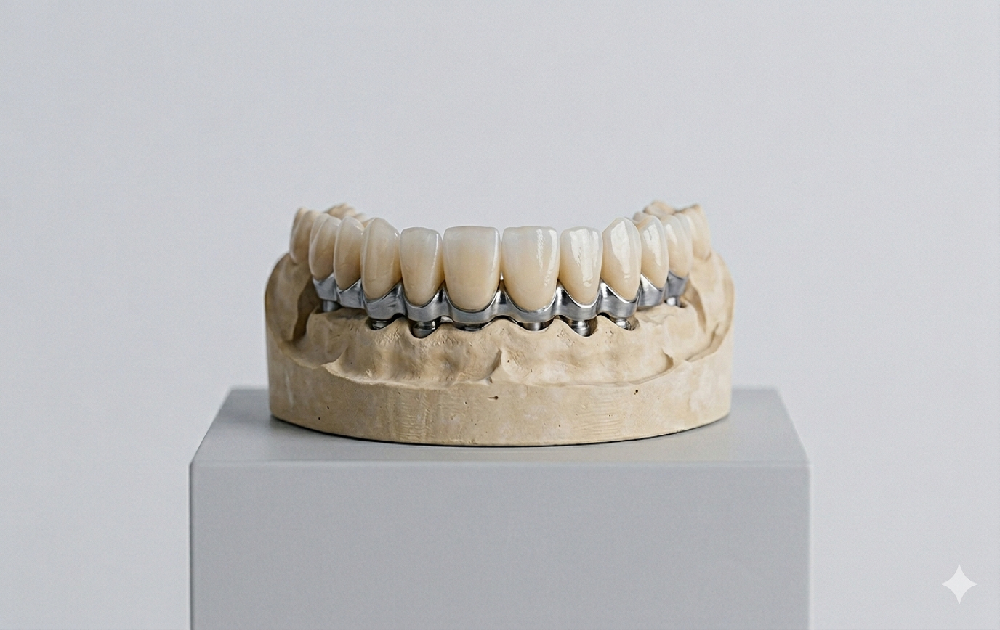
تيجان الزركونيا لمدة 5 أيام
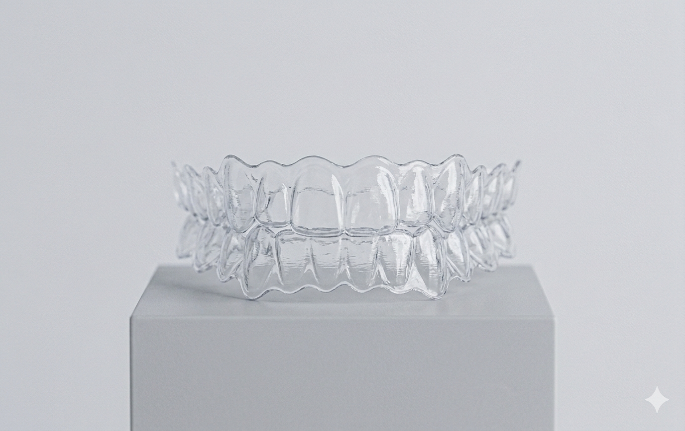
أجهزة علاج انقطاع التنفس أثناء النوم
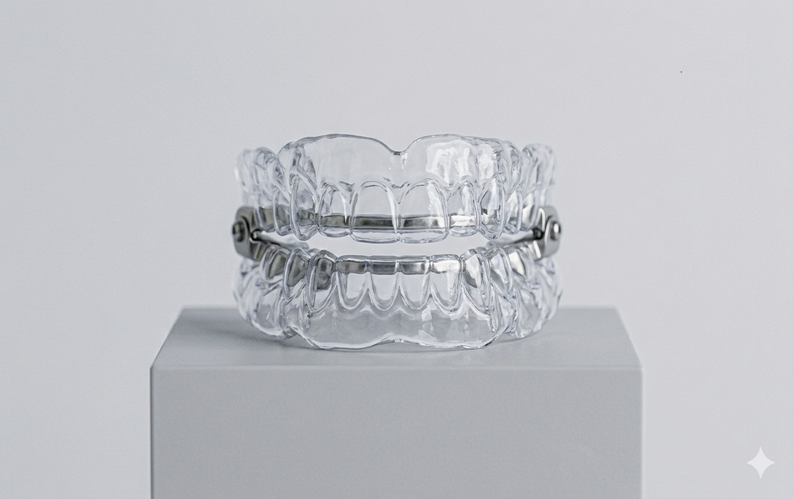
تقويم الأسنان الشفاف
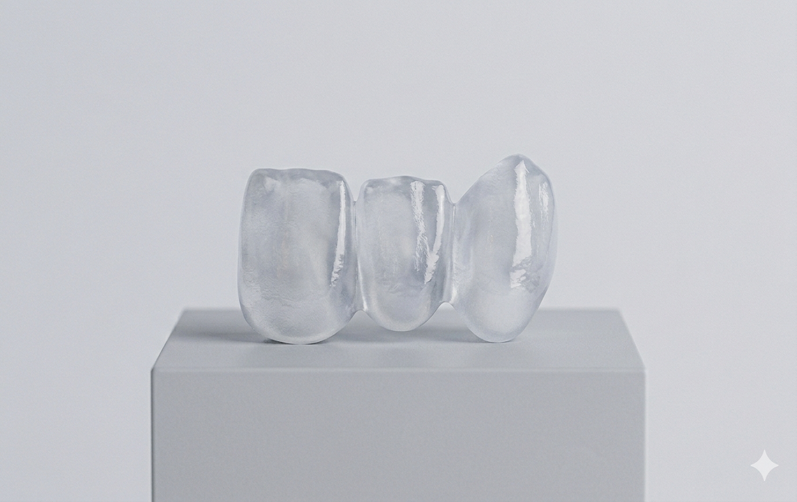
واقيات ليلية مطبوعة بتقنية ثلاثية الأبعاد
استمتع بمستوى من التحكم لم يكن ممكناً من قبل.
هنا يمكنك إضافة شرح مفصل حول تقنيات المسح الضوئي المستخدمة في لازورد.
تفاصيل حول كيفية إرسال الطلبات والمواصفات رقمياً لضمان السرعة.
شرح لعملية مراجعة التصميم ثلاثي الأبعاد واعتماده من قبل الطبيب.
نظام تتبع ذكي يتيح لك معرفة مرحلة تصنيع الحالة لحظة بلحظة.
التزامنا بتقليص مدة الانتظار لتوفير أفضل تجربة للمريض.
مقارنة توضح تفوق خدماتنا الرقمية من حيث الدقة والسرعة.
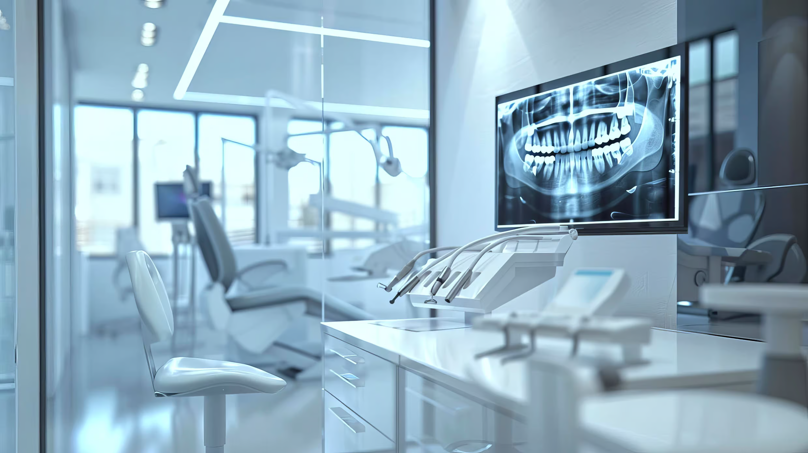
اجعل مساعديك يقومون بالمسح بثقة لكل سير عمل رقمي - استفد من التدريب غير المحدود لفريقك كلما دعت الحاجة.
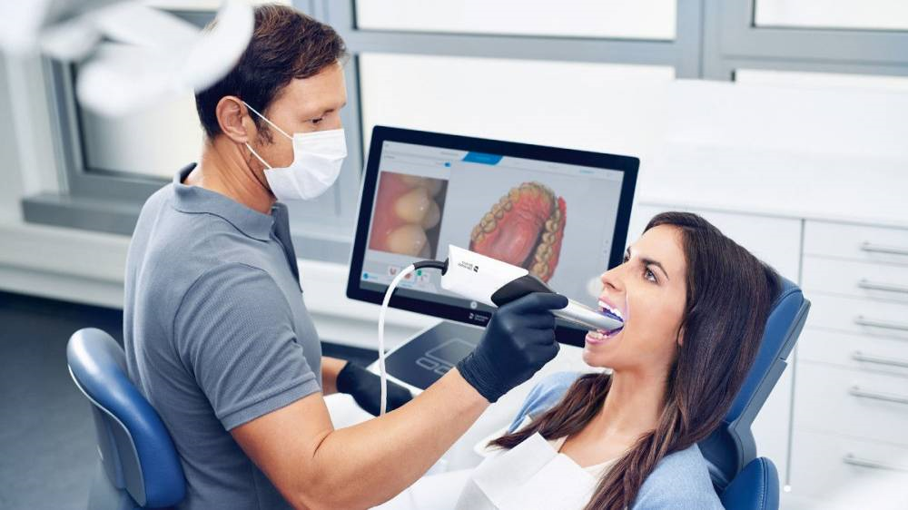
ارفع مستوى رعاية المرضى من خلال ابتكارات مثل أطقم الأسنان ذات الموعدين، والأجزاء الجزئية المباشرة إلى النهاية، والماسح الضوئي رقم 1 في طب الأسنان الترميمي.
استخدم أدوات المسح المتقدمة - تصور التصميمات الرقمية والموافقة عليها، وتعزيز قبول الحالة، وتقديم نتائج ناجحة للمرضى مع التحكم المطلق.
تم تسليم الابتسامات السعيدة
تم الحفظ مقدمًا
تقييمات حالة 5 نجوم
قم بتطوير ممارساتك مع لازورد - الشريك الرقمي الوحيد المتكامل وقم بتحسين تجربة المريض والحلول السريرية ونمو الأعمال.
من خلال تقديم النموذج أعلاه، أوافق على شروط الاستخدام وسياسة الخصوصية الخاصة بشركة لازورد وأوافق على أن يتم الاتصال بي من قبل شركة لازورد عبر رسالة نصية باستخدام معلومات الاتصال التي قدمتها.
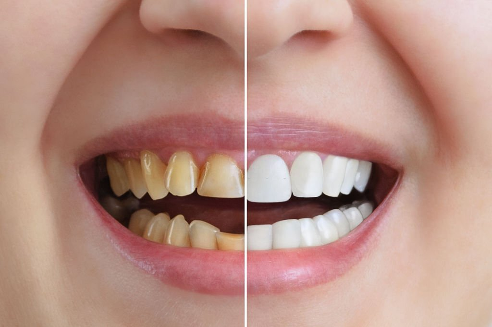
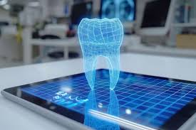
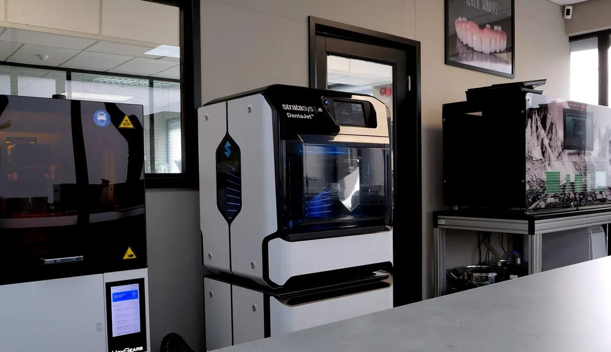
لازورد هو شريكك الرقمي المتكامل في مجال طب الأسنان...
الدقة العالية، السرعة في الإنجاز، وتحسين تجربة المريض بشكل ملحوظ.
هو مختبر يعتمد بالكامل على تقنيات CAD/CAM والمسح الرقمي بدلاً من الطرق التقليدية.
نوفر سير عمل يبدأ من المسح الضوئي المباشر وصولاً إلى التصميم الرقمي المعتمد.
تيجان الزركونيا، التقويم الشفاف، حلول الزراعة، وأطقم الأسنان الرقمية.
نتفوق بالدقة، السرعة، والدعم التقني المباشر للأطباء.